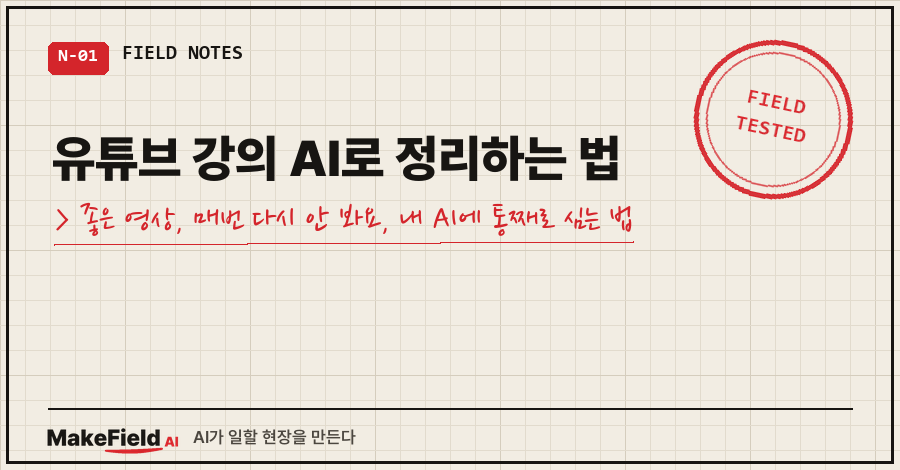
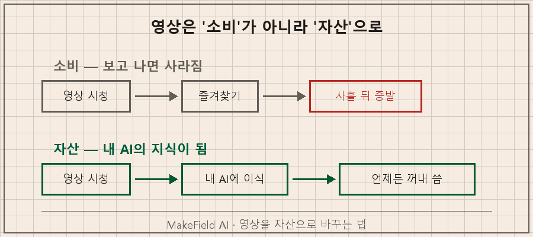
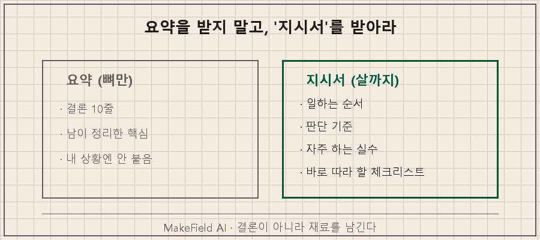
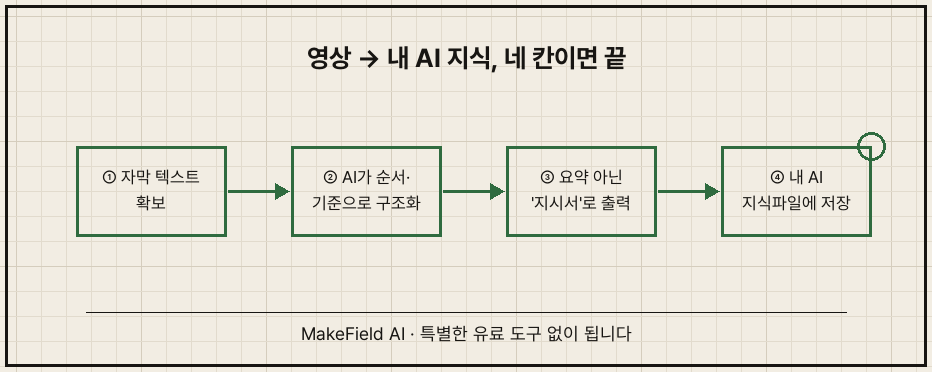

한 시간짜리 좋은 강의 영상을 봤는데, 사흘 뒤엔 "그거 뭐였더라"가 된 적 있으시죠.
저는 그걸 볼 때마다 다시 처음부터 돌려봤어요. 그 짓을 몇 번 하다 보니 좀 억울하더라고요.
먼저 답부터 드릴게요.
좋은 영상은 요약해서 보관하는 게 아니라, 통째로 뜯어서 '내 AI가 아는 지식'으로 심어두면 다시 볼 필요가 없어져요.
영상 → 자막 텍스트 → AI가 구조화 → 내 AI의 지식파일. 이 네 칸만 거치면 됩니다.
오늘은 제가 이걸 어쩌다 하게 됐고, 어떻게 하는지를 순서대로 풀어볼게요.
1. 영상은 '봤다'로 끝나고, 남는 게 없더라고요
저는 현장에서 자동화랑 제어를 만지며 15년을 보낸 엔지니어예요.
요즘은 일하는 방식 자체를 AI랑 붙여서 바꾸는 중이라, AI 관련 강의 영상을 꽤 챙겨 봅니다.
문제는 이거였어요. 영상은 '소비'라서, 보고 나면 내 손에 남는 게 즐겨찾기 하나뿐이더라고요.
좋은 방법론을 봤는데 막상 내 작업에 쓰려고 하면 기억이 안 나요.
그래서 또 영상을 열고, 앞부분 건너뛰고, 그 대목 찾느라 스크러버를 왔다 갔다.
좋은 영상일수록 이 왕복이 더 잦았어요. 참 별짓을 다 하면서 보고 있었던 거죠.

2. 요약 앱을 먼저 써봤는데, 그게 함정이었어요
처음엔 영상 요약해주는 도구부터 썼어요.
링크 넣으면 3줄, 10줄로 정리해주는 것들이요. 빠르긴 빨라요.
근데 며칠 쓰다 보니 알겠더라고요. 요약은 '남이 정리한 결론'이라, 정작 내 상황엔 안 붙어요.
그 영상에서 제가 진짜 쓰고 싶었던 건 "결론 10줄"이 아니라 "저 사람이 일을 처리하는 순서와 판단 기준"이었거든요.
요약본은 살은 다 발라내고 뼈만 주는 느낌이었어요.

그래서 방향을 틀었습니다.
요약을 받는 게 아니라, 영상 내용 전체를 내 AI한테 통째로 넘겨서 내 방식대로 다시 쓰게 하자로요.
3. 핵심은 '요약'이 아니라 '지식 이식'이었어요
전환점은 관점을 바꾼 거였어요.
영상을 '보고 요약할 대상'이 아니라, 내 AI한테 먹일 재료로 본 거죠.
한번은 긴 AI 방법론 영상 하나를 통으로 넘겨봤어요.
"이 영상에서 말하는 작업 순서랑 판단 기준을, 내가 나중에 그대로 따라 할 수 있는 지시서 형태로 정리해줘"라고 시켰고요.
그랬더니 3줄 요약이 아니라, 제가 바로 쓸 수 있는 체크리스트와 순서도가 나왔어요.
그걸 제 AI의 지식파일에 그대로 넣어뒀습니다.
그다음부터가 진짜였어요.
이제 제 AI한테 관련된 걸 물으면, 그 영상의 방법론으로 답을 해요.
영상을 다시 열 일이 없어진 거죠. 영상 한 편이 제 파트너의 상식이 된 셈이에요.

4. 따라 하는 순서 (2026년 8월 기준)
특별한 유료 도구 없이 됩니다. 순서만 지키면 돼요.
1. 영상의 자막(스크립트)을 텍스트로 확보한다. 유튜브 자막을 켜서 전체 스크립트를 복사하거나, 자막 텍스트를 뽑아주는 무료 도구를 씁니다. 핵심은 '영상'이 아니라 '글'로 만드는 것.
2. 그 텍스트를 AI한테 통째로 준다. 이때 "요약해줘"가 아니라 지시를 구체적으로 합니다. "이 내용을 내가 따라 할 수 있는 단계별 지시서로 바꿔줘. 결론 말고 순서와 판단 기준을 살려줘."
3. 결과를 '요약본'이 아니라 '지시서'로 받는다. 체크리스트, 순서도, 자주 하는 실수 목록 같은 실행 가능한 형태로요.
4. 그걸 내 AI의 지식(참고 파일)에 넣는다. 로컬 AI든, 쓰는 AI의 프로젝트/지식 기능이든, 다음 대화부터 참조되게 저장해두면 끝.
저도 2번에서 한 번 걸렸어요.
처음엔 지시를 대충 줬더니 또 매끈한 요약을 뱉더라고요.
"순서와 판단 기준을 살려라"를 명시하고 나서야 쓸 만한 지시서가 나왔어요.
AI는 시키는 대로만 하니까, 원하는 결과물의 '형태'를 콕 집어줘야 합니다.
5. 이렇게 바꾸니 뭐가 달라졌나
가장 큰 변화는 영상을 대하는 태도였어요.
전엔 "이 영상 봐야 하는데"가 숙제처럼 쌓였는데, 이젠 "이 영상 내 AI한테 먹여야지"가 됐어요.
소비할 콘텐츠가 아니라, 쌓을 자산으로 보이기 시작한 거죠.
물론 만능은 아니에요.
말로만 진행되고 화면 시연이 중요한 영상은 자막만으론 반쪽이라, 이 방식이 잘 안 먹혀요.
그리고 자막이 부정확하면 AI도 헷갈리니까, 뽑은 텍스트는 한 번 훑어보는 게 좋아요.
그래도 방법론·강의형 영상엔 확실히 잘 통하더라고요.
Q. 영상 요약 앱이랑 뭐가 다른가요?
요약 앱은 '남의 결론'을 주고, 이 방식은 '내가 다시 쓸 수 있는 재료'를 남깁니다. 그리고 그 재료가 내 AI에 저장돼서, 다음부터 알아서 참조돼요. 한 번 하고 끝이 아니라 계속 꺼내 쓰는 게 차이예요.
Q. 꼭 로컬 AI가 있어야 하나요?
아니요. 쓰시는 AI에 프로젝트나 지식 파일을 붙이는 기능이 있으면 거기 넣어도 됩니다. 핵심은 '이식'이지 특정 도구가 아니에요.
Q. 저작권은 괜찮나요?
개인이 자기 공부용으로 정리해 보관하는 선까지가 안전해요. 정리한 걸 그대로 재배포하는 건 다른 문제니까, 딱 내 참고용까지만 두시길 권해요.
정리하면 이래요.
좋은 영상을 만나면 즐겨찾기에 묻어두지 말고, 자막 뽑아서 내 AI한테 지시서로 만들게 시키고, 그걸 지식파일에 심어두세요.
그럼 그 영상은 다시 볼 필요 없이 내 것이 됩니다.
혹시 즐겨찾기에만 묻어둔 좋은 영상, 지금 몇 개나 쌓여 있으세요.
그중 딱 하나를 오늘 밤 AI한테 먹여보는 것부터 시작하면 돼요.
이렇게 영상 한 편씩 AI한테 이식한 기록은 makefield.ai에 하나씩 옮겨두고 있어요.
---
태그: #유튜브영상AI정리 #유튜브강의AI #유튜브요약AI #영상AI학습 #AI지식관리 #유튜브자막추출 #AI활용법 #나만의AI #생성형AI #AI공부법 #로컬AI #시스템프롬프트 #제조업AI #현장엔지니어 #MakeFieldAI